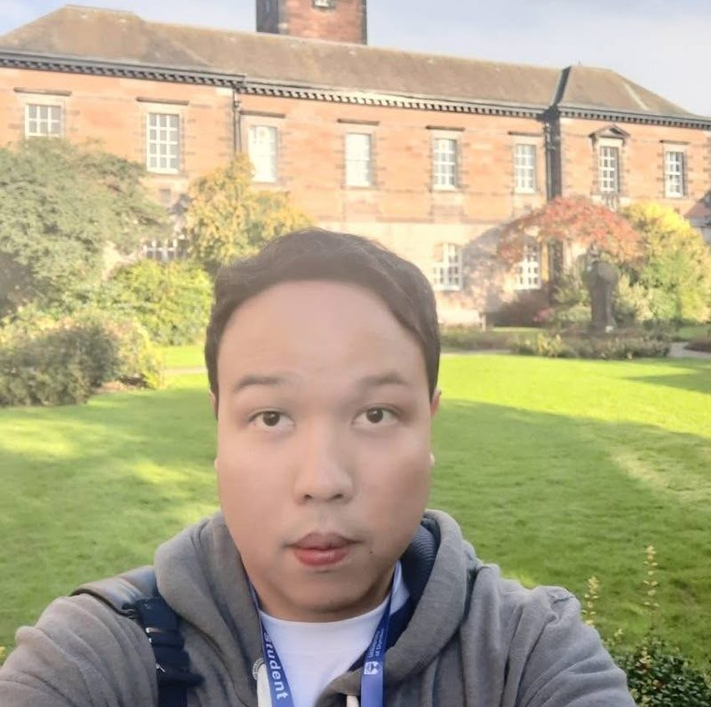
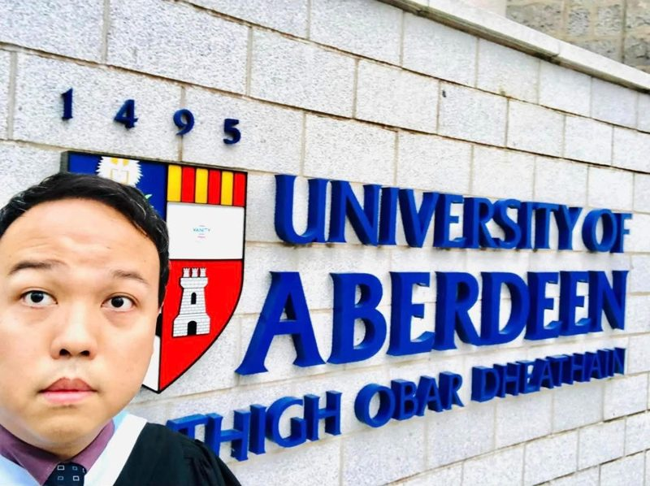
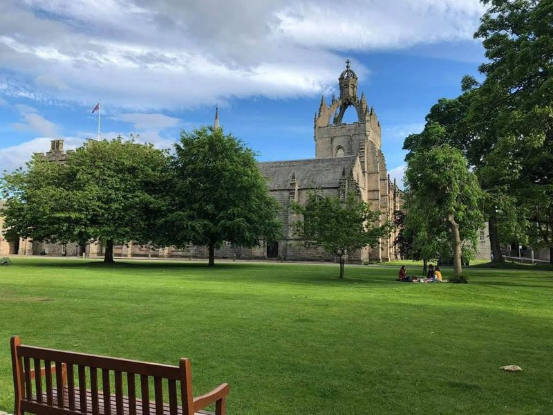
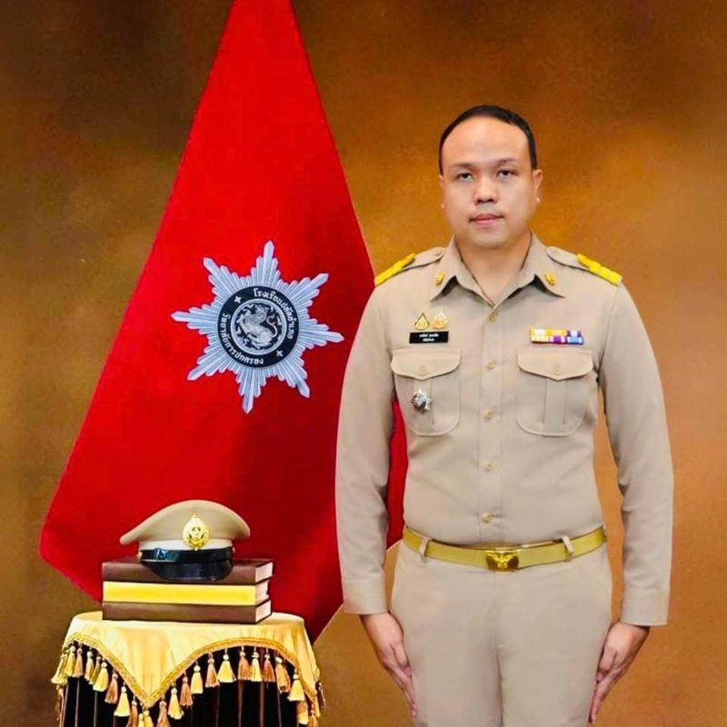
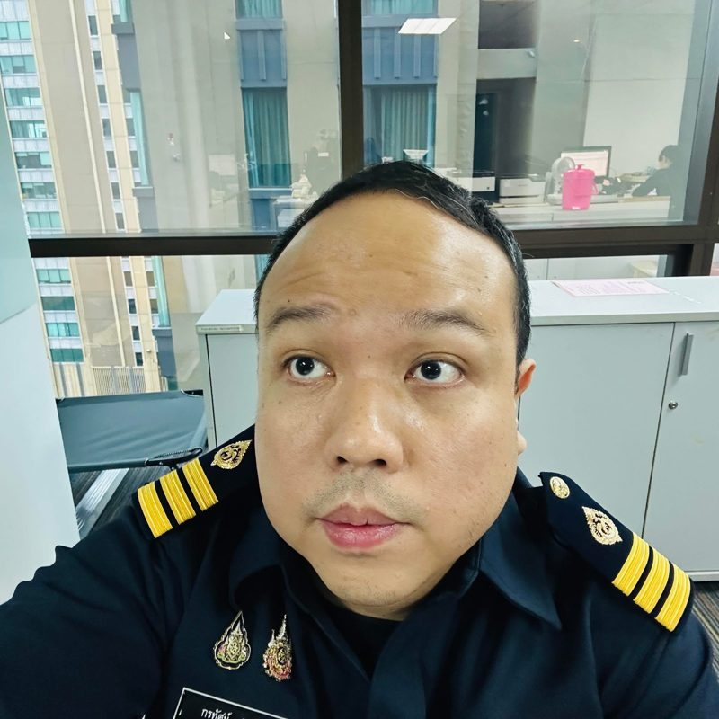
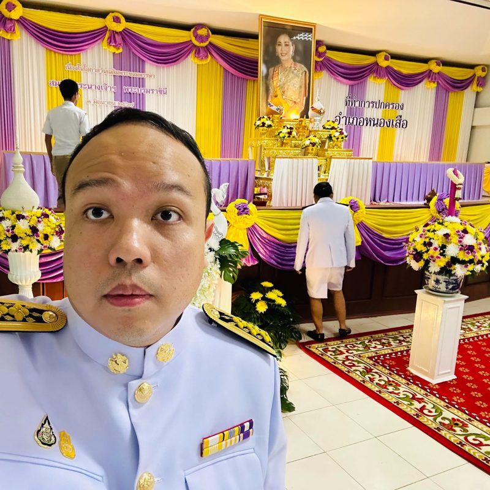
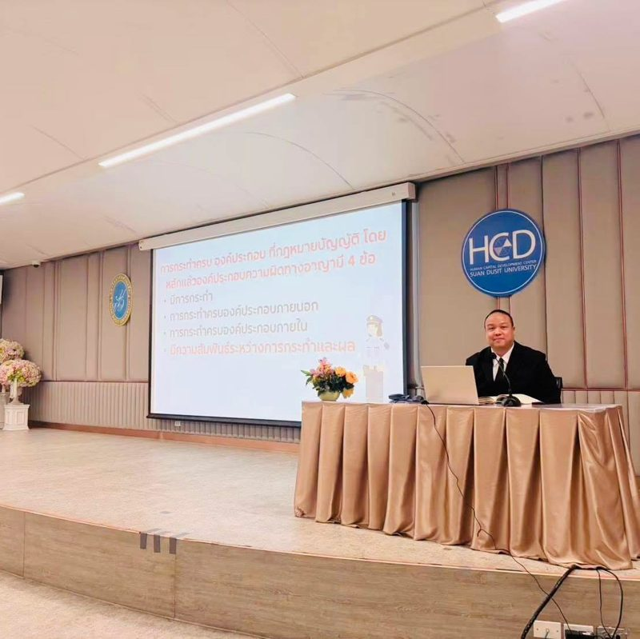

อาจารย์ตองสอนกฎหมาย
เข้าใจกฎหมายอาญาและกระบวนการยุติธรรมอย่างเป็นระบบ ผ่านบทความที่อ่านง่าย โดย อาจารย์กรทัศน์ ศุขเฉลิม อาจารย์ประจำหลักสูตรนิติศาสตรบัณฑิต มหาวิทยาลัยสวนดุสิต
อาจารย์กรทัศน์ ศุขเฉลิม
อาจารย์ประจำหลักสูตรนิติศาสตรบัณฑิต โรงเรียนกฎหมายและการเมือง มหาวิทยาลัยสวนดุสิต สำเร็จการศึกษานิติศาสตรบัณฑิต (เกียรตินิยมอันดับสอง) จากมหาวิทยาลัยรามคำแหง และปริญญาโททางกฎหมาย (LL.M.) สองสาขาจากสกอตแลนด์ พร้อมประสบการณ์ทำงานด้านกฎหมายในหน่วยงานภาครัฐ
LL.M. 2 สาขา · University of Dundee และ University of Aberdeen



ประสบการณ์ภาครัฐ



อาจารย์นิติศาสตร์ · มหาวิทยาลัยสวนดุสิต

ด้านที่อาจารย์สอนและสนใจ
ครอบคลุมกฎหมายอาญา กระบวนการยุติธรรมทางอาญา กฎหมายแพ่ง กฎหมายมหาชน และระเบียบวิธีวิจัยทางกฎหมาย
กฎหมายอาญา
หลักความรับผิดทางอาญา องค์ประกอบความผิด และโทษ
กฎหมายวิธีพิจารณาความอาญา
กระบวนการตั้งแต่ชั้นจับกุม สอบสวน ฟ้องคดี จนถึงการพิจารณาของศาล
กฎหมายแพ่ง
หลักกฎหมายแพ่งพื้นฐาน เช่น นิติกรรม สัญญา ละเมิด และทรัพย์สิน
งานวิจัยกฎหมายเปรียบเทียบ
Comparative Legal Research — ศึกษากฎหมายไทยเทียบกับต่างประเทศ
งานวิจัยเชิงคุณภาพ
ระเบียบวิธีวิจัยเชิงคุณภาพสำหรับงานวิจัยทางนิติศาสตร์
สิทธิมนุษยชนในกระบวนการยุติธรรมทางอาญา
สิทธิของผู้ต้องหาและจำเลย และหลักการพิจารณาคดีที่เป็นธรรม
กฎหมายมหาชน
กฎหมายที่เกี่ยวกับรัฐ การใช้อำนาจรัฐ และความสัมพันธ์กับประชาชน
ผลงานวิจัยล่าสุด
กรทัศน์ ศุขเฉลิม. (2569). การพัฒนากฎหมายว่าด้วยความผิดฐานลักพาตัวสัตว์เลี้ยงในประเทศไทย: ศึกษาวิเคราะห์เปรียบเทียบกับพระราชบัญญัติการลักพาตัวสัตว์เลี้ยง ค.ศ. 2024 ของสหราชอาณาจักร. วารสารการเมือง การบริหารและกฎหมาย มหาวิทยาลัยบูรพา, ปีที่ 18 ฉบับที่ 2 (กรกฎาคม – ธันวาคม 2569).
บทความล่าสุด
บทความที่อาจารย์เขียนเผยแพร่บนเว็บไซต์ Law for ASEAN สำนักงานคณะกรรมการกฤษฎีกา
-
INDIGENOUS People ศึกษากรณีการคุ้มครองและไม่เลือกปฏิบัติต่อกลุ่มชาติพันธุ์/กลุ่มชนเผ่าพื้นเมือง
-
ร่างกฎหมายว่าด้วยสวัสดิภาพสัตว์ในการนำเข้าสุนัข แมว และเฟอเรท ของสหราชอาณาจักร
-
ร่างกฎหมายว่าด้วยการป้องกันและการตอบโต้การฆ่าล้างเผ่าพันธุ์ (Genocide (Prevention and Response) Bill) ของสหราชอาณาจักร
ติดต่ออาจารย์ตอง
สำหรับการติดต่อเรื่องการเรียนการสอน การบรรยาย หรือความร่วมมือทางวิชาการ สามารถติดต่อได้ทางอีเมล
ส่งอีเมลถึงอาจารย์- อีเมลk.sookchaloem@gmail.com
- สังกัดโรงเรียนกฎหมายและการเมือง มหาวิทยาลัยสวนดุสิต